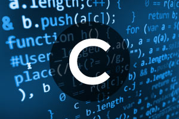
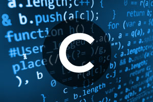

Programming Languages
links
 C++ Language
The C++ language has an object oriented structure which is used in large projects. Programmers can collaborate one program into different parts or even one individual work on each part of the program. The structure of object oriented also permit code to be reused many times.This language is an efficient language. But, many programmers will disagree.

C Language
The C language is a basic programming language and it is a very popular language, particularly used in game programming, Because C language includes the additional packing of the C++, Every programmer uses this language because it makes programs faster . However the value of this language gives the reusability of C++ to get the slight increase in performance with C language.
C++ Language
The C++ language has an object oriented structure which is used in large projects. Programmers can collaborate one program into different parts or even one individual work on each part of the program. The structure of object oriented also permit code to be reused many times.This language is an efficient language. But, many programmers will disagree.

C Language
The C language is a basic programming language and it is a very popular language, particularly used in game programming, Because C language includes the additional packing of the C++, Every programmer uses this language because it makes programs faster . However the value of this language gives the reusability of C++ to get the slight increase in performance with C language.
 Fortran Language
Fortran language is a number crunching language and still it is used by scientists. This language allows different sizes of variables up to the memory limit in the machine. This language is suitable for engineers, who have to calculate values with high precision. Program in Fortran is inflexible and sometimes it makes difficult to read.
Fortran Language
Fortran language is a number crunching language and still it is used by scientists. This language allows different sizes of variables up to the memory limit in the machine. This language is suitable for engineers, who have to calculate values with high precision. Program in Fortran is inflexible and sometimes it makes difficult to read.